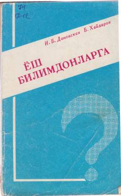

YBBolalar uchun qiziqarli savollar, mantiqiy jumboqlar va masalalar to'plami.
Ushbu kitob bolalar va o'smirlarning bo'sh vaqtlarini mazmunli o'tkazish uchun mo'ljallangan qiziqarli savollar, jumboqlar va masalalar to'plamidir. Unda tabiat, matematika, fizika hamda boshqa sohalarga oid mantiqiy savollar va ularning javoblari keltirilgan. To'plam o'quvchilarning zukkoligi, topqirligi va xotirasini rivojlantirishga yordam beradi.